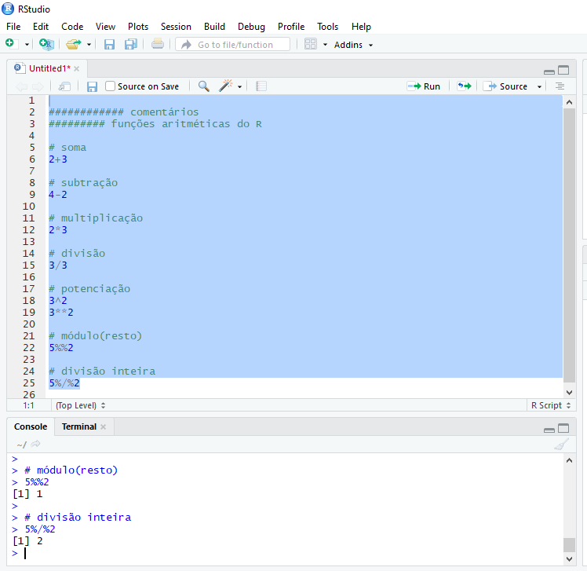
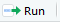
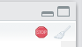

1 Módulo I
1.1 Primeiros Passos
1.1.1 Breve Histórico
R é uma linguagem e um ambiente para programação estatística que roda em diversas plataformas *NIX, no Windows e MacOS (R-project.org), podendo ser baixado e distribuído gratuitamente de acordo com a General Public license (GPL).
A origem do nome R remonta à linguagem S, desenvolvida por John Chambers entre 1975 e 76 na Bell Labs (antiga AT&T e atual Lucent Technologies) – mesmo local de origem de importantes inovações na área de computação, como o sistema operacional UNIX, a linguagem de programação C, os transístores, dentre outras.
Em contraponto à implementação comercial da linguagem S – o S-PLUS, Ross Ihaka e Robert Gentleman, do departamento de Estatística de Auckland - Nova Zelândia criaram, em 1995, o R como uma alternativa livre e gratuita à linguagem S. O próprio nome R vem de um jogo com a linguagem S e as iniciais dos nomes dos autores, Ross e Robert.
Figure 1.1: Local de Nascimento do R indicado com o pacote leaflet. Clique no pin azul
1.1.2 Instalação do R
A instalação do ambiente R é fácil de ser realizada em qualquer sistema operacional. No windows, os passos são:
- 1 Acesse o site https://www.r-project.org/.
- 2 Clique em download R ou CRAN mirror.
- 3 Escolha o repositório (Comprehensive R Archive Network - CRAN) de preferência.
- 4 Clique em Download R for Windows.
- 5 Clique em base.
- 6 Baixe o executável de instalação, clicando em Download R X.X.X for Windows.
- 7 Execute o arquivo baixado para a instalação do software.
A janela default do R no Windows é bastante simplória. Pode-se observar que é dividida em uma janela maior, chamada de R GUI (R Graphical User Interface) – ou seja, a interface gráfica do R; e uma janela R Console. Nesta última janela, ao se iniciar o R, tem-se uma descrição sobre a versão utilizada e algumas dicas sobre a linguagem. O sinal > indica a linha de comando ou prompt, que é onde digitam-se os comandos a serem rodados pelo interpretador.

Interface Gráfica do R no Windows
Aqui, cabe uma distinção entre a linguagem R e algumas outras linguagens de programação: a linguagem R é uma linguagem interpretada, ou seja, a execução do código ocorre juntamente com a análise do código, como se fosse on-demand. Digita-se o código, dá-se o comando de execução e imediatamente o interpretador reúne os comandos, os traduz para linguagem de máquina (ou linguagem de baixo nível) e os transfere para o processador para execução. Outro exemplo de linguagem interpretada seria Python.
Nas linguagens compiladas, a análise de código ocorre em apenas uma fase – compilação – quando se analisa os dados e transforma-se o código-fonte em código-alvo. O código-alvo geralmente fica separado, em um arquivo executável, que será executado em um momento posterior.
1.1.3 Instalação do RStudio
Tendo em vista que a interface gráfica original do R é bastante modesta, existem diversos Integrated Development Environment (IDEs) que reúnem várias ferramentas de apoio à programação e análise de dados, com o objetivo de facilitar a vida de seus usuários. O IDE mais utilizado para a linguagem R é o RStudio.
Veja, a seguir, passos para instalação do RStudio no Windows:
- Acesse o site https://www.rstudio.com/.
- Clique em DOWNLOAD.
- Escolha a versão FREE e clique em DOWNLOAD RStudio for Windows.
Como se vê, a interface do gráfica do RStudio é mais “amigável” do que a default do R. A janela está dividida em três partes: uma para Console, outra para Environment, History e Connections e mais outra para Files, Plots, Packages, Help e Viewer. Ao painel de Environment, History e Connections podem ser acrescentadas outras abas, dependendo do tipo de trabalho que você está desenvolvendo no R, como por exemplo a aba Presentations, quando se está produzindo slides ou a aba Build quando está construindo e testando um pacote. Os nomes em geral são auto-explicativos, mas falaremos mais sobre eles nos próximos módulos.

Interface do RStudio
1.1.4 Instalação do RTools no Windows
Mais adiante, veremos como instalar pacotes no R, que nada mais são que módulos que podem ser adicionados à sua intalação padrão do R. Acontece que alguns desses módulos possuem partes escritas em outras linguagens, como C++ e Fortran, que são linguagens compiladas. Por default, o Windows não vem com compiladores que possam executar esta tarefa, diferentemente de Linux e Mac. Para contornar este problema no Windows, instalamos o RTools.
O aplicativo Windows RTools, também desenvolvido pela R Foundation, contém os compiladores e outras ferramentas necessárias para instalar os pacotes R que necessitam de compilação.
A instalação é bem simples:
- Acesse https://cran.r-project.org/bin/windows/Rtools/
- Baixe o executável recomendado, geralmente marcado na cor verde e com a observação recommended;
- Execute o aplicativo mantendo as opções-padrão sugeridas durante a instalação.
1.1.5 Funcionalidades Básicas do R e do RStudio
1.1.5.1 R como Calculadora
A forma mais básica de se utilizar o R é como uma calculadora. As operações aritméticas básicas são executadas com os seguintes operadores no R:
| Operador | Operação |
|---|---|
| + | adição |
| - | subtração |
| * | multiplicação |
| / | divisão |
| ^ ou ** | exponenciação |
| x%%y | módulo resto |
| x%/%y | quociente inteiro |
Vejamos alguns exemplos, digitando em nosso console, logo ao lado de >, as seguintes operações:
2+1## [1] 34-2## [1] 22*3## [1] 63/3## [1] 13^2## [1] 93**2## [1] 95%%2## [1] 15%/%2## [1] 2Perceba que ao lado de todas as repostas, apareceu [1]. Os colchetes e o número 1 dentro indicam que naquela linha está o primeiro elemento do objeto resultante. Isso acontece porque o R, sempre que possível, trabalha de forma vetorizada. O valor dentro de [ ] indica a posição dentro do vetor de resposta do número logo a direita (resultado). Como em cada operação, a resposta é única, todos os valores estavam localizados na primeira posição do nosso vetor de resposta.
Isso vai ser bastante útil quando você quiser, por exemplo, aplicar uma operação matemática ou qualquer outra transformação a todas as entradas de uma coluna em uma tabela e imprimir o resultado no console. No output, o R vai quebrar o resultado em algumas linhas e esses números entre colchetes nos ajudarão a identificar a qual posição do vetor de resposta pertence o primeiro número de cada linha na saída impressa no console.
Teste por exemplo:
1:100 * 2## [1] 2 4 6 8 10 12 14 16 18 20 22 24 26 28 30 32 34 36 38 40 42 44 46 48 50 52
## [27] 54 56 58 60 62 64 66 68 70 72 74 76 78 80 82 84 86 88 90 92 94 96 98 100 102 104
## [53] 106 108 110 112 114 116 118 120 122 124 126 128 130 132 134 136 138 140 142 144 146 148 150 152 154 156
## [79] 158 160 162 164 166 168 170 172 174 176 178 180 182 184 186 188 190 192 194 196 198 200No nosso exemplo, o R optou por quebrar a multiplicação dos 100 números em grupos de 17 números nas 4 primeiras linhas e num grupo de 15 valores na última. Na primeira linha de nosso output, 2 é o elemento na posição 1 ([1]) do vetor de resposta; na segunda linha, o número 36 é o elemento que se refere à posição 18 ([18]) do vetor de resposta e assim por diante, até a última linha que começa no elemento de posição 86.
1.1.5.1.1 Priorização e Hierarquia de Operações
Assim como no MS Excel, os parênteses também serão muito úteis para realizar tanto operações aritméticas, quanto comparações e execução sequencial de funções no R. Com eles, poderemos indicar a “prioridade” ou a ordem em que os cálculos/computações devem ser efetuados. Teste o exemplo abaixo:
((1007+1)/8)^2## [1] 15876Note que a operação é feita de dentro para fora. Primeiro o interpretador executa (1007+1), depois divide este resultado por 8 (/8), para só então elevar tudo ao quadrado (^2).
Sem os parênteses, o resultado seria bem diferente:
1007+1/8^2## [1] 1007.0161.1.5.2 Operadores Lógicos
Você pode, ainda, realizar comparações lógicas no R. Abaixo estão relacionados alguns dos operadores lógicos que serão importantes nos primeiros módulos do curso. Outros serão apresentados nos demais módulos:
| Operador | Operação |
|---|---|
| > | maior que |
| >= | maior ou igual a |
| < | menor que |
| <= | menor ou igual a |
| == | igual a |
| != | diferente de |
| x&&y | x E y |
| x||y | x OU y |
Vejamos alguns exemplos:
2 > 1## [1] TRUE1009 >= 1009## [1] TRUE3 < 0.7## [1] FALSE3 <= 3.0001## [1] TRUE7 == 5## [1] FALSE4353.789 == 4353.7891## [1] FALSE8 != 13## [1] TRUE4353.789 != 4353.7891## [1] TRUE2 == 2 && 7 != 5## [1] TRUE(2 == 2) && (7 != 5)## [1] TRUE(2 == 3) || (7 <= 5)## [1] FALSE4353.789 != 4353.7891 || 7 >= 0.7## [1] TRUENote que as respostas são, nestes exemplos, sempre um vetor lógico: TRUE ou FALSE. Mais à frente, veremos os demais tipos de vetores existentes no R.
1.1.5.3 Guardando seus códigos em um script
No RStudio, você pode acrescentar um pequeno painel, que facilitará ainda mais o seu trabalho. Trata-se do source pane, um painel onde você pode criar scripts para armazenar várias linhas de código, de modo a excutá-las de uma única vez ou linha-a-linha. Caso queira guardar as contas e comparações lógicas que fez anteriormente em um arquivo de modo a poder executá-las posteriormente, você poderá fazê-lo por meio de um script. Na janela de script, você consegue manter uma trilha de todos os comandos utilizados.
Isto é importante, pois otimiza o uso do R ao permitir rodar os mesmos códigos para diferentes arquivos e diferentes ocasiões, em vez de termos que refazer toda a programação a cada vez que mudarem nossos dados de entrada. Você pode abrir várias janelas de script, uma ao lado da outra, e navegar entre elas, como se faz com as abas de um browser. Neste curso, faremos todas as aulas e exercícios utilizando os arquivos de script.
Para acrescentar a janela de script (source pane), basta criar um novo arquivo, clicando em  , logo abaixo de File, e em seguida em
, logo abaixo de File, e em seguida em  . Nossa janela do RStudio deve ficar conforme a figura a seguir.
. Nossa janela do RStudio deve ficar conforme a figura a seguir.

Vamos acrescentar todas as linhas de códigos que executamos anteriormente ao nosso script recém criado.

DICA: Você pode inserir comentários em seus scripts como uma forma de documentar os passos de seu trabalho para refrência futura. No R, os comentários são incluídos com o caractere #.
Para salvar o arquivo de script, basta pressionar Ctrl+S ou clicar no disquete único na barra de menus. Esse arquivo será salvo com extensão .R, indicando que se trata de um arquivo com códigos da linguagem R.
DICA: Sugerimos que você crie e salve um ou mais scripts a cada aula/seção. Isso o ajudará a organizar seu material e recuperar conceitos e exemplos importantes durante e após o curso.
Você pode executar todas as linhas de um script ou optar por executar apenas algumas poucas linhas ou trechos específicos desse código. Selecione o trecho que deseja executar e pressione Ctrl+Enter. Você verá, no console (janela abaixo do script), seu código sendo executado. Uma alternativa ao Ctrl+Enter é selecionar o trecho ou linha(s) e clicar em .
Na maioria das vezes, nosso código pode levar um tempo considerável para ser executado completamente. Para saber se o interpretador ainda está ocupado executando o seu código, basta olhar para o canto direito do painel Console. Se você ver o símbolo , o interpretador ainda está ocupado executando a última sequência de comandos. O símbolo ">" também não aparecerá livre no console. Você pode tentar parar a execução clicando no ícone de stop. No entanto, nem sempre será possível interrompê-la.
Tente gerar uma distribuição normal com 100 milhões de entradas:
rnorm(1:100000000)DICA: Pode acontecer ainda de você olhar para o console e não ver o símbolo >, sem que tenha aparecido o ícone de stop no canto direito do painel. Isso geralmente acontece quando esquecemos de fechar algum parenteses, chave ou colchete aberto no início de uma linha de código. Faça um teste:
((1007+1)/8^2O console ficará esperando você completar o código. Você tem duas opções, acrescentar o parênteses faltante (caso seja possível) diretamente no console, ou pressionar Esc, consertar o código e executá-lo novamente.
1.1.5.4 Aba Environment
Todos os objetos que forem criados na sua sessão do R/RStudio serão automaticamente armazenados no que chamamos de Global Environment, representado pela aba Environment no RStudio.

Aba Environment
Note que até o momento, nosso Environment encontra-se vazio. Isso porque ainda não “guardamos” nenhum objeto ou resultados das operações que realizamos anteriormente.
1.1.5.4.1 Atribuição de objetos no R
Para criarmos um objeto no R, seja para armazenar um valor específico ou o resultado de uma operação, utilizamos o sinal de atribuição característico do R <-, i.e. a <- b (lê-se a recebe o valor de b). Pode-se utilizar ainda o sentido contrário: b -> a (a recebe o valor de b), ou ainda o sinal de igual =. Essas alternativas são menos convencionais. Sugerimos a utilização de a <- b para que não se confunda a criação de objetos com a passagem de parâmetros em argumentos de funções mais a frente.
Para criar um objeto/variável x que contém o valor 2, execute:
# x recebe 2
x <- 2
# para ver o valor de x:
x## [1] 2DICA: O atalho para o operador de atribuição <- é Alt+-.
Note agora que nossa aba Environment não está mais vazia:

Agora vamos salvar os resultados de algumas operações aritiméticas e de comparações lógicas:
out1 <- 789/34.5
out2 <- 3^2
out3 <- out1 > out2Vejamos como ficou nosso Environment com os novos objetos criados:

O R é bastante liberal no que se refere a sua política de nomes de objetos. As proibições são apenas as seguintes:
- um nome não pode iniciar com algarismo, ex:
1out <- 2; - um nome não pode conter apenas algarismos, ex:
01 <- 2; - um nome não pode conter caracteres especiais, a não ser
.ou_, ex:out#01 <- 2 - um nome não pode ser idêntico a uma palavra utilizada como token da linguagem R, ex:
TRUE <- 2;for <- 2, etc.
DICA: A linguagem R é case sensitive, ou seja, ela faz distinção entre letras maiúsculas e minúsculas de um nome. Portanto Nome_do_Objeto != nome_do_objeto!
1.1.5.5 Salvando os objetos do Environment
E se você quiser salvar esses objetos criados na sua sessão de R, para continuar trabalhando neles posteriormente? É possível fazê-lo e é simples.
Para salvar todos os objetos do seu Environment, clique em Session e Save Workspace As... no RStudio. Será salvo um arquivo com extensão .RData com o nome e caminho que você especificar.
Uma alternativa também seria:
save.image("C:\\caminho_para_pasta_de_preferencia\\meu_workspace.RData")
# ou
save.image("C:/caminho_para_pasta_de_preferencia/meu_workspace.RData")DICA: A barra invertida \ tem uma função especial no R, ela funciona como um caractere de escape, o quê veremos mais a fundo em sessões futuras. Portanto, para que uma barra invertida deixe de ter sua função especial, precisamos “escapá-la” com outra barra invertida. Por isso, usamos duas barras em endereços do Windows. Uma forma de contornar isso é usar barras normais, como no Linux. Mesmo no Windows, o R saberá que você está especificando um caminho Windows.
Para carregar o arquivo salvo em sessões futuras, você tem novamente duas alternativas. A primeira é clicar em Session e Load Workspace... no RStudio. A segunda é:
load("C:\\caminho_para_pasta_de_preferencia\\meu_workspace.RData")Se você quiser salvar elementos específicos e não todo o environment, você pode fazê-lo da seguinte forma:
save(out1, out2, file="C:\\caminho_para_pasta_de_preferencia\\meus_objetos.RData")Para carregar esses objetos, você também poderá usar a função load().
DICA: Para salvar e carregar um único elemento, como por exemplo um dataset (tabela) que foi trabalhado, mas que deverá ainda ser carregado em uma nova sessão, você pode usar as funções saveRDS() e readRDS(). Trata-se d eum formato mais otimizado para salvar grandes objetos.
1.1.6 Estrutura da linguagem R
R pode ser considerado uma linguagem de programação funcional, uma vez que a maioria dos procedimentos e rotinas são realizadas por meio de funções que recebem alguns argumentos como input, executam algumas ações sobre esses argumentos e retornam um output. Grosso modo, o uso de funções se dá da seguinte forma:
nome_da_funcao(argumento1 = valor1, argumento2 = valor2, ...)Embora os operadores aritiméticos e lógicos vistos anteriormente não se enquadrem na estrutura funcional descrita acima, acabam por operar internamente como funções.
Como você verá mais à frente, qualquer usuário pode criar uma função no R e não somente utilizar as disponibilizadas pela distribuição default da linguagem.
DICA: Não precisamos utilizar sempre o formato nome_argumento=valor dentro das funções, pois o R é inteligente o suficiente para fazer o matching dos argumentos pela posição em que são passados (nome_da_funcao(valor1, valor2)) ou mesmo pelas letras iniciais do argumento informado.
Vejamos alguns exemplos de funções que executam oeprações matemáticas e que já vem de fábrica no base R (distribuição básica do R):
DICA: O RStudio possui a funcionalidade de autocompletar as palvras que você digita com os objetos criados durante sua sessão R ou já existentes na memória. Quando for digitar as funções abaixo, faça um teste digitando as primeiras duas letras de cada função e pressiona TAB.
# raiz quadrada
sqrt(81)## [1] 9# juntando com priorização de operações
sqrt((3*3)^2)## [1] 9## produtório
prod(2,2) # 2x2## [1] 4prod(2,3,5,7,8) # 2x3x5x7x8## [1] 1680## logaritmo
# log de 3 na base e
log(3) # log natural## [1] 1.098612# log de 3 na base 10
log(3,10)## [1] 0.4771213# log3 na base 10
log10(3)## [1] 0.4771213# abs = modulo, |3 - 9|
abs(3-9)## [1] 6# fatorial
# 4 fatorial
factorial(4)## [1] 241.1.6.1 Pacotes no R
Um dos motivos do grande sucesso da linguagem R deve-se ao fato de que qualquer usuário pode desenvolver uma “suíte” contendo diversas funções, para executar uma ou várias tarefas. Esse conjunto ou suíte de funções pode ser disponibilizado na forma de um pacote, o qual outros usuários poderão instalar e também dele usufruir. Após cumprir uma série de exigentes requisitos, esses pacotes geralmente são disponibilizados no Comprehensive R Archive Network (CRAN).
O CRAN possui uma política bastante séria de revisão de pacotes. Para que um pacote R possa compor o repositório do CRAN, deve atender a uma série de exigências e ser aprovado em diversos testes focados essencialmente nos seguintes fatores: segurança para o usuário; funcionamento sem erros em pelo menos dois sistemas operacionais; documentação densa (inclusive com citações bibliográficas) sobre as funcionalidades do pacote.
Tudo isso faz com que os pacotes disponibilizados no CRAN sejam bastante confiáveis, transformando-se assim na fonte oficial de distribuição de pacotes da linguagem.
Se você quiser saber o número de pacotes disponíveis no CRAN hoje, execute:
dim(available.packages(contrib.url(getOption("repos")), filters=list()))[1]Em números de março de 2020, como você deve ter notado, temos mais de 15 mil pacotes no CRAN para as mais diversas finalidades. Para saber os tipos de pacotes existentes no repositório, recomenda-se uma visita ao Task Views do CRAN. Há pacotes de Econometria, Análise Econômica Regional, Estatítica, Clusterização, Ensaios Clínicos, Séries Temporais, Otimização, Tratamento de Dados, Aprendizagem de Máquina e muitos outros.
1.1.6.2 Instalação de pacotes
Para instalar pacotes disponíveis no CRAN, deve-se utilizar a função install.packages("nome_do_pacote"), passando-se o nome do pacote desejado entre aspas como argumento da função.
Vamos testar essa funcionalidade instalando o pacote REAT - Regional Economic Analysis Toolbox, que é um pacote que você provavelmente utilizará bastante em suas análises no IPEA:
install.packages("REAT")Se o pacote foi corretamente instalado, você deve ver algo semelhante a seguinte mensagem no console:
package ‘REAT’ successfully unpacked and MD5 sums checked
The downloaded binary packages are in
C:\Users\...\...\...\...\...\downloaded_packages
>Não se assuste caso outros pacotes também tenham sido instalados. Isso é muito comum, uma vez que alguns pacotes podem recorrer a funções presentes em outras bibliotecas.
Para carregar ou anexar o pacote à sua sessão no R, de modo que você possa utilizar as funções disponíveis nele, empregamos a função library(nome_do_pacote) ou require(nome_do_pacote). Neste caso, o nome do pacote pode vir com ou sem aspas.
library(REAT)Se você não quiser carregar um pacote completamente em sua sessão do R, porque vai apenas utilizar uma função específica, ao invés de library(), você pode usar o formato nome_do_pacote::nome_dafunção(parâmetro).
1.1.6.3 Outras fontes de pacotes
Cabe destacar que a versão básica instalada do R, que chamamos de base R, já vem com alguns pacotes instalados, como por exemplo os pacotes stats, MASS, foreign, graphics, o próprio base, dentre outros. Para listar todos os pacotes instalados em sua máquina, execute:
installed.packages()Embora o CRAN seja o repositório oficial de pacotes R, é importante mencionar a existência de outras fontes também importantes para obtenção de pacotes.
A primeira das fontes alternativas é o Bioconductor, que é um projeto open source de desenvolvimento de softwares relacionados à análise e compreensão de dados genômicos gerados em experimentos de laboratório relacionados a biologia molecular. É, portanto, um importante repositório de pacotes para quem trabalha com Bioinformatics ou Biostatistics.
A segunda fonte seria o Github que é um sistema para gerenciamento e versionamento de código. Qualquer pessoa pode criar uma conta no github e começar a compartilhar seus códigos, os quais poderão ser acessados e modificados/melhorados (com o consenso do autor original). No caso do R, os pacotes normalmente possuem uma versão estável no CRAN e uma versão de desenvolvimento no Github, onde os autores e demais colaboradores estão trabalhando no melhoramento e resolução de bugs dos pacotes. Uma vez que a versão do GitHub esteja estável e pronta para lançamento, o autor pode enviá-la ao CRAN.
Acesse o repositório do meu pacote emstreeR no Github: https://www.github.com/allanvc/emstreeR.
Você pode instalar pacotes no R a partir de suas versões no Github. Isso é relativamente comum e ocorre quando uma nova funcionalidade que você deseja testar foi implementada somente na versão de desenvolvimento do pacote e ainda não se encontra disponível no CRAN. Para instalar pacotes a partir de suas versões no Github, você precisa de outro pacote antes, o devtools.
Vamos instalar a versão de desenvolvimento do pacote emstreeR:
install.packages("devtools") # caso não o tenha instalado em sua máquina
# alternativa 1
devtools::install_github(repo="allanvc/emstreeR")
# ou
# alternativa 2
library(devtools)
install_github(repo="allanvc/emstreeR")Note que passamos o caminho do repositório no argumento repo.
1.1.7 Como obter ajuda
Essa talvez seja a parte mais importante de todo o material. Saber como e onde buscar ajuda pode significar gastar apenas alguns minutos ao invés de horas ou mesmo dias na resolução de um problema envolvendo análise de dados e programação. Ao longo deste curso e ao empregar R em uma atividade de trabalho, vocês vão se deparar com diversas dúvidas envolvendo lógica de programação, análise de dados, ou mesmo buscando sabe se existe algum pacote já implementado que realize a tarefa que vocês precisam.
1.1.7.1 O Help do R
O primeiro local para se buscar ajuda sobre algo relacionado ao R, normalmente está dentro do próprio R ou RStudio. Conforme meniconamos na seção @ref(#pkg), a política do CRAN exige que os pacotes estejam muito bem documentados. E isso ajuda muito aos usuários e desenvolvedores. Além da documentação do base Re dos demais pacotes que já acompanham a instalação padrão, ao instalar um novo pacote, a documentação desta nova biblioteca passa a compor o help do R instalado em sua máquina. Então, quando queremos entender uma função, ou seja, conhecer seus parâmetros de entrada, o que ela faz e o que retorna, recomenda-se utilizar o help do próprio R.
No painel direito inferior, você encontra uma série de abas, sendo que a 3ª delas é aba que exibe o material de ajuda. Você pode fazer as buscas utilizando o campo de pesquisa da própria aba, ou por meio de comandos inseridos no console.

Painel de ajuda do R/Rstudio
Um exemplo: imagine que você gostaria de saber se o R possui alguma função que calcula o logaritmo (base \(e\)) de um número. Para isso, temos a função help.search(), que recebe como parâmetro (“entre aspas”) o tópico sobre o qual você deseja pesquisar. Toda a ajuda do R está em inglês; por isso, se você quer encontrar algo relacionado à logaritmo, deve executar o comando help.search("logarithm") ou ??logrithm.
Vejamos:
# alternativa 1
help.search("logarithm")
# ou
# alternativa 2
??logarithmNa aba Help do RStudio aparecerá o resultado dos pacotes e as respectivas funções que contém as palavras que você buscou. Nesse caso, portanto, caso, temos a função log() do pacote base para calcular logaritmos. Veja:

Resultados de busca
Se você já sabe exatamente o nome da função ou objeto do R sobre o qual deseja obter ajuda, pode utilizar também help("palavra") ou ?palavra.
# alternativa 1
help("log")
# ou
# alternativa 2
??log
Documentação da função log()
Geralmente, os tópicos mais importantes dos arquivos de ajuda são Description, Usage, Arguments e Examples. O primeiro mostra o que a função faz, o segundo como a função deve ser usada, o terceiro quais argumentos ela recebe e, no quarto, você encontra exemplos de como ela funciona. Value também pode ser interessante, pois informa qual tipo de objeto a função retorna.
1.1.7.1.1 Vignettes
Mais a frente, veremos como instalar novos pacotes no R. Esses pacotes são como módulos adicionais que permitem ao usuário realizar mais operações e atividades na linguagem. Muitos desses pacotes trazem consigo, além da documentação básica, verdadeiros tutoriais sobre como utilizar o pacote em si ou funções específicas desses pacotes. São muito mais detalhados que a simples documentação do Help do pacote ou de uma função. Enquanto alguns não fornecem qualquer vignette, outros podem trazem mais de uma vignette. Caso você queira verificar utilize:
vignette("nome_do_pacote")1.1.7.2 Ajuda via Internet
R é bastante conhecido por sua comunidade extremamente ativa. Muitas vezes, ao analisar dados, surgem problemas que não são passíveis de solução apenas com a documentação interna da linguagem. Nesses casos, é necessário recorrer à experiência de outros usuários que tenham vivenciado o problema e que possam dar dicas de como ao ponto desejado. Nos 20 anos do R, vai ser difícil não encontrar alguém que vivenciou o mesmo problema que você. Nesse ponto a internet é nossa melhor amiga e não é vergonha nenhuma procurar ajuda lá. Dos mais inexperientes usuários da linguagem aos mais talentosos desenvolvedores de R, todos, sem excessão, acabam recorrendo a internet como uma valiosa fonte de informação e ajuda. Existem livros gratuitos, blogs com excelentes tutoriais, fóruns e sites de perguntas e respostas (Q&A).
Neste último caso, não há como não mencionar o StackOverflow, que é um site de perguntas e respostas especializado em programação em geral. A comunidade de R no StackOverflow é extremamente ativa e uma das maiores do site. Lá você encontrará usuários iniciantes, intermediários, avançados, desenvolvedores de pacotes e até mesmo gente que atua na atualização da linguagem e do RStudio. Há uma versão em português e uma em inglês. Recorra à versão em inglês do site, por ser obviamente muito mais ativa.
Antes de postar uma pergunta lá faça uma busca com os termos que deseja, por exemplo: “How do a scatter plot in R?”. Se digitar isso na busca do site ou mesmo no Google, nos primeiros resultados você já terá as respostas necessárias do StackOverflow para fazer um scatterplot no R, pelo menos de 3 formas diferentes, usando pacotes diferentes.
Veja um exemplo de pergunta e resposta no StackOverflow:
Pergunta
Resposta
1.2 Estrutura de Objetos da Linguagem R
Entender a estrutura de criação e manipulação de objetos no R será essencial para impulsionar sua velocidade de aprendizado nas demais sessões do curso. O bom aproveitamento dos tópicos mais práticos dependem muito de um entendimento sólido sobre os objetos da linguagem R.
Tudo (ou quase tudo) no R são objetos. Os mais importantes são:
- Vetores: são uma espécie de array unidimensional. Consistem em uma sequência de valores que podem ser: numéricos, caracteres ou expressões lógicas (como TRUE ou FALSE). Ressalta-se que as entradas de um vetor podem ser somente de um único tipo.
Exemplo:
## [1] 5.1 4.9 4.7 4.6 5.0 5.4- Matrizes: são arrays multidimensionais com coleção de vetores em linhas ou colunas, sendo que todos os vetores da coleção possuem o mesmo tipo e tamanho.
Exemplo:
## [,1] [,2]
## [1,] "R" "IPEA"
## [2,] "IPEA" "R"
## [3,] "R" "IPEA"
## [4,] "IPEA" "R"
## [5,] "R" "IPEA"- Dataframes: em termos de aparência, são praticamente idênticos às matrizes, mas com a possibilidade de se ter uma coleção de vetores (colunas) de diferentes tipos (ex: um vetor numérico e outro vetor de caracteres). Por essa característica, é o principal objeto utilizado para armazenar tabelas de dados no R.
Exemplo:
## Sepal.Length Sepal.Width Petal.Length Petal.Width Species
## 1 5.1 3.5 1.4 0.2 setosa
## 2 4.9 3.0 1.4 0.2 setosa
## 3 4.7 3.2 1.3 0.2 setosa
## 4 4.6 3.1 1.5 0.2 setosa
## 5 5.0 3.6 1.4 0.2 setosa
## 6 5.4 3.9 1.7 0.4 setosa
## 7 4.6 3.4 1.4 0.3 setosa
## 8 5.0 3.4 1.5 0.2 setosa
## 9 4.4 2.9 1.4 0.2 setosa
## 10 4.9 3.1 1.5 0.1 setosa- Listas: é o tipo mais amplo de objeto, que pode reunir coleções de dataframes, vetores e/ou matrizes, ou ainda de todos eles. Uma característica da lista é que, uma vez que os objetos dentro dela não precisam ser do mesmo tipo, também não há a necessidade de que sejam do mesmo tamanho. Isso, muitas vezes, é de grande auxílio na manipulação de dados.
Exemplo:
## [[1]]
## [1] "R" "IPEA" "2020"
##
## [[2]]
## Sepal.Length Sepal.Width Petal.Length Petal.Width Species
## 1 5.1 3.5 1.4 0.2 setosa
## 2 4.9 3.0 1.4 0.2 setosa
## 3 4.7 3.2 1.3 0.2 setosa
## 4 4.6 3.1 1.5 0.2 setosa
## 5 5.0 3.6 1.4 0.2 setosa
##
## [[3]]
## [,1] [,2]
## [1,] 0.9659412 0.8334877
## [2,] 0.1669618 0.3301778- Funções: são um conjunto de procedimentos que recebem zero, um ou mais parâmetros como input, realizam um cálculo ou procedimento e retornam um resultado para o usuário. Como você pode perceber até funções são consideradas objetos no R.
Exemplo:
## function (x, base = exp(1)) .Primitive("log")Nesta seção, estudaremos mais a fundo a criação e manipulação de vetores e Dataframes, que julgamos serem os objetos mais importantes para este curso. A criação de funções será objeto de estudo do Módulo
1.2.1 Vetores
1.2.1.1 Como criar um vetor
No R há 3 tipos de vetores: númericos (numeric), de caracteres ou strings (character) e vetores lógicos (logic). Todos eles são criados por meio da função c(), sendo o “c” de concatenate. Esta função faz a concatenação de elementos de um mesmo tipo, produzindo, assim um vetor. Os parâmetros a serem passados são os elementos que comporão o vetor e devem ser separados por vírgulas.
Vetor numérico:
v1 <- c(1, 0.2, 0.3, 2, 2.8); v1## [1] 1.0 0.2 0.3 2.0 2.8DICA: Ao usar ;, você indica ao R que está separando a execução do código, embora haja duas operações na mesma linha - uma que cria o vetor e outra que imprime o resultado no console ao chamar o nome do objeto.
DICA: Os vetores numéricos podem ser de dois tipos: integer, para números inteiros ou double, para ponto flutuante (números decimais). Para saber o tipo de um vetor, use a função typeof(nome_vetor)
Vetor de caracteres ou strings:
v2 <- c("R", "IPEA", "2020", "R", "IPEA", "2020"); v2## [1] "R" "IPEA" "2020" "R" "IPEA" "2020"DICA: Note que as strings devem ser passadas "entre aspas".
Vetor lógico:
v3 <- c(TRUE, FALSE, FALSE, TRUE, TRUE, FALSE, FALSE, TRUE); v3## [1] TRUE FALSE FALSE TRUE TRUE FALSE FALSE TRUEExperimente misturar dois vetores. Como os vetores só podem ser de um único tipo, o R automaticamente forçara o resultado final para um único tipo.
Exemplo:
v4 <- c(v1, v2); v4## [1] "1" "0.2" "0.3" "2" "2.8" "R" "IPEA" "2020" "R" "IPEA" "2020"v5 <- c(v1, v3); v5## [1] 1.0 0.2 0.3 2.0 2.8 1.0 0.0 0.0 1.0 1.0 0.0 0.0 1.0v6 <- c(v2, v3); v6## [1] "R" "IPEA" "2020" "R" "IPEA" "2020" "TRUE" "FALSE" "FALSE" "TRUE" "TRUE" "FALSE" "FALSE"
## [14] "TRUE"seq(-1, -10)## [1] -1 -2 -3 -4 -5 -6 -7 -8 -9 -10A função typeof(nome_do_vetor) pode ser usada para confirmar os tipos dos vetores que você criou.
1.2.1.1.1 Outras formas de criar um vetor
Há outras funções interessantes que possibilitam criar vetores:
:, exemplo:1:100, cria um vetor numérico composto pela sequência de 1 a 100;seq(), exemplo:seq(-10, -1), cria um vetor numérico composto pela sequência de -10 a -1;rep(), exemplo:rep("IPEA", 10), cria um vetor composto pela string"IPEA"repetida 10 vezes.
1.2.1.2 Como extrair elementos de um vetor
Para extrair elementos de um vetor (e de qualquer objeto no R), utilizamos a indexação por meio de colchetes nome_do_vetor[posição]. Você pode informar uma única posição, um conjunto de posições ou mesmo um intervalo de posições a extrair:
Extraindo um único elemento:
# 3º elemento do vetor v1
v1[3]## [1] 0.3# 1º elemento do vetor v2
v2[1]## [1] "R"# 5º elemento do vetor v3
v3[5]## [1] TRUEExtraindo mais de uma elemento:
Aqui você usará um vetor dentro de outro vetor. A ideia é que o vetor dentro dos colchetes [] contenha as posições (índices) a serem extraídas do vetor original. Lembre-se que o vetor contendo as posições deverá ser criado e, para criar um vetor, usamos a função c().
# 1º e 3º elementos do vetor v1
v1[c(1,3)]## [1] 1.0 0.3# ou
pos1 <- c(1,3)
v1[pos1]## [1] 1.0 0.3# 2º e 4º elemento do vetor v2
v2[c(2,4)]## [1] "IPEA" "R"# ou
pos2 <- c(1,3)
v2[pos2]## [1] "R" "2020"# 1º, 2º e 5º elemento do vetor v3
v3[c(1,2,5)]## [1] TRUE FALSE TRUE# ou
pos3 <- c(1,2,5)
v3[pos3]## [1] TRUE FALSE TRUEExtraindo elementos em um intervalo:
Mais uma vez usaremos vetor dentro de vetor. A diferência é que criaremos um vetor utilizando a função :, a qual cria uma sequência de valores ou intervalo. Podemos utilizar ainda a função seq(a,b)
# do 1º ao 3º elementos do vetor v1
v1[1:3]## [1] 1.0 0.2 0.3# ou
v1[seq(1,3)]## [1] 1.0 0.2 0.3# do 2º ao 5º elemento do vetor v2
v2[2:5]## [1] "IPEA" "2020" "R" "IPEA"# ou
v2[seq(2,5)]## [1] "IPEA" "2020" "R" "IPEA"# do 3º ao 6º elemento do vetor v3
v3[2:6]## [1] FALSE FALSE TRUE TRUE FALSE# ou
v3[seq(2,6)]## [1] FALSE FALSE TRUE TRUE FALSE1.2.1.3 Como calcular o tamanho de um vetor?
DICA: Para calcular o tamanho de um vetor, use a função length(nome_vetor):
length(v6)## [1] 141.2.1.4 Como alterar elementos de um vetor
Uma vez que você entendeu o processo de indexação de vetores. Você pode alterar ou substituir um ou mais elementos de um vetor, usando ndexação e atribuição.
v1[2] <- 450.78
v2[3] <- 2021
v3[c(3,5)] <- c(TRUE, FALSE) # a substituição tem que ser do mesmo tamanho do resultado da indexação1.2.2 Dataframes
Os Dataframes são as “tabelas” do R. Provavelmente será um dos objetos que você mais utilizará para fazer análise de dados. O Dataframe possui linhas e colunas. Pense nas colunas como vetores, onde cada uma das posições desse vetor indica uma linha. Podemos pensar os Dataframes, então, como uma coleção de vetores, que podem inclusive ser de tipos diferentes, mas necessariamente devem possuir o mesmo tamanho. Isso faz todo sentido, pois numa tabela temos variáveis numéricas, nomes, e outros tipos que não serão tratados neste curso, como datas, por exemplo.
1.2.2.1 Como criar um Dataframe
Para criarmos um dataframe, utilizamos a função data.frame(). No entanto, o mais comum é que o dataframe seja criado a a partir da leitura de alguma base de dados, por meio das funções de leitura que serão apresentadas principalmente no Módulo 2.
Vamos criar um dataframe de 3 colunas. Os argumentos principais são os vetores que compõem as colunas.
# OBS: todos os vetores precisam ter o mesmo tamanho
v6 <- 11:15
v7 <- seq(0.3, 0.7, by=0.1)
v8 <- rep("IPEA", 5)
v9 <- rep(c(TRUE, FALSE), 5)
df1 <- data.frame(v6, v7, v8, v9)
df1## v6 v7 v8 v9
## 1 11 0.3 IPEA TRUE
## 2 12 0.4 IPEA FALSE
## 3 13 0.5 IPEA TRUE
## 4 14 0.6 IPEA FALSE
## 5 15 0.7 IPEA TRUE
## 6 11 0.3 IPEA FALSE
## 7 12 0.4 IPEA TRUE
## 8 13 0.5 IPEA FALSE
## 9 14 0.6 IPEA TRUE
## 10 15 0.7 IPEA FALSEDICA: Há vários outros argumentos que também podem ser usados. Vejamos a estrutura da função data.frame(). Vale a pena consultar o help da função data.frame também (help(data.frame)).
data.frame
help("data.frame")Durante a criação de um dataframe, podemos escolher outros nomes para as colunas:
df1 <- data.frame(col1 = v6, col2 = v7, col3 = v8, col4 = v9)
# ou
# df1 <- data.frame("col1" = v6, "col2" = v7, "col3" = v8, "col4" = v9)
df1## col1 col2 col3 col4
## 1 11 0.3 IPEA TRUE
## 2 12 0.4 IPEA FALSE
## 3 13 0.5 IPEA TRUE
## 4 14 0.6 IPEA FALSE
## 5 15 0.7 IPEA TRUE
## 6 11 0.3 IPEA FALSE
## 7 12 0.4 IPEA TRUE
## 8 13 0.5 IPEA FALSE
## 9 14 0.6 IPEA TRUE
## 10 15 0.7 IPEA FALSEVocê deve ter notado que há sempre um coluna à esquerda que contem a numeração ou nomes das linhas do seu dataframe. É o que chamamos de rownames.
DICA: Se você quiser confirmar a estrutura de seu dataframe, ou seja, saber o tipo de suas colunas, use a função str(nome_data_frame)
str(df1)## 'data.frame': 10 obs. of 4 variables:
## $ col1: int 11 12 13 14 15 11 12 13 14 15
## $ col2: num 0.3 0.4 0.5 0.6 0.7 0.3 0.4 0.5 0.6 0.7
## $ col3: chr "IPEA" "IPEA" "IPEA" "IPEA" ...
## $ col4: logi TRUE FALSE TRUE FALSE TRUE FALSE ...Note que a coluna 2 col2 foi tratada como factor e não como character, como esperávamos. factor é uma abstração que o R utiliza para salvar variáveis categóricas na memória de modo a ocupar menos espaço. Basicamente, ele converte as categorias em um número, de modo a otimizar a utilização de memória. Se a variável for impressa no console, ele faz uma reconversão apenas para apresentá-la ao usuário. Para que a col2 seja realmente criada como uma coluna do tipo character, devemos setar o parâmetro stringsAsFactors = FALSE. Guarde bem essa dica, pois você usará esse mesmo parâmetro ao ler dados externos, transformando-os em dataframes no R.
df1 <- data.frame(col1 = v6, col2 = v7, col3 = v8, col4 = v9, stringsAsFactors = FALSE)
str(df1)## 'data.frame': 10 obs. of 4 variables:
## $ col1: int 11 12 13 14 15 11 12 13 14 15
## $ col2: num 0.3 0.4 0.5 0.6 0.7 0.3 0.4 0.5 0.6 0.7
## $ col3: chr "IPEA" "IPEA" "IPEA" "IPEA" ...
## $ col4: logi TRUE FALSE TRUE FALSE TRUE FALSE ...DICA: A partir da versão 4.0.0, não é mais necessário declarar stringsAsFactors = FALSE na função data.frame. Este passou a ser o comportamento padrão da função: não transformar colunas de strings em fatores.
Note que, diferentemente dos vetores que eram unidimensionais, os dataframes são bidimensionais. Temos uma dimensão representada pelas linhas e outra dimensão representada pelas colunas. Para calcular as dimensões de seu dataframe você pode usar utilizar as seguintes funções:
# linhas vs colunas
dim(df1)## [1] 10 4# nro de linhas
nrow(df1)## [1] 10# nro de colunas
ncol(df1)## [1] 41.2.2.2 Como extrair elementos de um Dataframe
Para extrair os elementos de um Dataframe, utilizaremos a mesma técnica de indexação dos vetores, usando colchetes []. A diferença é que, como o Dataframe possui duas dimensões, precisamos trabalhar com ambas, separando os índices de cada dimensão com um vírgula dentro dos colchetes nome_df[índice_linhas, indice_colunas].
Agora, os valores que passarmos dentro dos colchetes referem-se às linhas ou as colunas de um Dataframe. É como jogar batalha naval.
DICA: Se você quiser extrair apenas linha(s) inteira(s), deixe a dimensão da coluna em branco, ex: nome_df[linha_X, ]. Se você quiser extrair apenas coluna(s), deixe a dimensão das linhas em branco, ex: nome_df[, coluna_Y].
Extraindo uma ou mais linhas:
# única linha
df1[3, ]## col1 col2 col3 col4
## 3 13 0.5 IPEA TRUE# algumas linhas
# note o posicionamento das vírgulas
df1[c(1,2,5), ]## col1 col2 col3 col4
## 1 11 0.3 IPEA TRUE
## 2 12 0.4 IPEA FALSE
## 5 15 0.7 IPEA TRUE# uma sequência de linhas
df1[3:5, ]## col1 col2 col3 col4
## 3 13 0.5 IPEA TRUE
## 4 14 0.6 IPEA FALSE
## 5 15 0.7 IPEA TRUEExtraindo uma ou mais colunas:
# única coluna
df1[ ,2]## [1] 0.3 0.4 0.5 0.6 0.7 0.3 0.4 0.5 0.6 0.7# algumas colunas
# note o posicionamento das vírgulas
df1[, c(2,3)]## col2 col3
## 1 0.3 IPEA
## 2 0.4 IPEA
## 3 0.5 IPEA
## 4 0.6 IPEA
## 5 0.7 IPEA
## 6 0.3 IPEA
## 7 0.4 IPEA
## 8 0.5 IPEA
## 9 0.6 IPEA
## 10 0.7 IPEA# uma sequência de colunas
df1[, 2:4]## col2 col3 col4
## 1 0.3 IPEA TRUE
## 2 0.4 IPEA FALSE
## 3 0.5 IPEA TRUE
## 4 0.6 IPEA FALSE
## 5 0.7 IPEA TRUE
## 6 0.3 IPEA FALSE
## 7 0.4 IPEA TRUE
## 8 0.5 IPEA FALSE
## 9 0.6 IPEA TRUE
## 10 0.7 IPEA FALSEExtraindo elementos específicos, cruzando linhas e colunas
Você pode misturar índices de ambas dimensões, para extrair subconjuntos específicos do seu Dataframe. É como jogar batalha naval:
# elemento único
# elemento no cruzamento da 2ºlinha e 3º coluna
df1[2, 3]## [1] "IPEA"# subconjuntos
# elementos no cruzamento da 2ª e 5ª linha vs 1ª e 4ª coluna
df1[c(2,5), c(1,4)]## col1 col4
## 2 12 FALSE
## 5 15 TRUE# subconjuntos
# sequência da 2ª a 4ª linha vs sequência da 3ª a 5ª linha
df1[1:3, 2:4]## col2 col3 col4
## 1 0.3 IPEA TRUE
## 2 0.4 IPEA FALSE
## 3 0.5 IPEA TRUEDICA: Você também pode misturar os exemplos anteriores, por exemplo: df1[2, 2:4].
1.2.2.3 Outras formas de indexar as colunas de um Dataframe
Há mais duas formas de indexar as colunas de um Dataframe. Ambas utilizam os nomes das colunas e não os índices.
Primeira forma alternativa:
df1[, "col2"]## [1] 0.3 0.4 0.5 0.6 0.7 0.3 0.4 0.5 0.6 0.7Segunda forma alternativa:
df1$col3## [1] "IPEA" "IPEA" "IPEA" "IPEA" "IPEA" "IPEA" "IPEA" "IPEA" "IPEA" "IPEA"Note que o output é impresso na horizontal Isso ocorre, porque, quando extraímos apenas uma coluna, estamos extraindo um vetor. E a forma de output de um vetor é na horizontal, como vimos anteriormente.
1.2.3 Referências do Módulo
Estatística Computacional 2 (2015). Notas de aula. Curso de Estatística, UnB, 1º semestre, 2015.
Nyffenegger, R. (2020). R: a computer language for statistical data analysis. URL https://renenyffenegger.ch/notes/development/languages/R/.
Wickham, H. (2014). Advanced R. September 25, 2014. Chapman and Hall/CRC. 476 Pages. Disponível em: https://adv-r.hadley.nz/.
R Core Team (2020). R: A language and environment for statistical computing. R Foundation for Statistical Computing, Vienna, Austria. URL http://www.R-project.org/.
1.2.4 Exercícios
1) Vetores
- Crie dois vetores numéricos (A e B) de tamanho 10 com números aleatórios escolhidos por você.
- Multiplique todos os itens do vetor A por \(\times3\) e os itens do vetor B por \(\times4\).
- Crie um novo vetor (C) resultante da operação de \(\frac{log(B)}{|A| + (A+B)}\), onde \(|A|\) é o tamanho do vetor A.
- Crie um novo vetor lógico (D), verificando quais valores de A são maiores que os respectivos valores de B.
- Acrescente 3 nomes escolhidos por você ao final de cada vetor. Os vetores mudam de tipo?
2) Dataframes
- Crie um Dataframe de 10 linhas e 5 colunas, com pelo menos 3 colunas de tipos diferentes, sendo pelo menos duas númericas.
- Crie uma 6ª coluna resultante da soma entre duas colunas numéricas do Dataframe.
- Esolha duas colunas numéricas A e B, e crie uma 7ª coluna resultante da operação de \(\frac{log(B)}{|A| + (A+B)}\), onde \(|A|\) é o tamanho da coluna A.